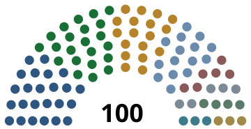

Register › Assembly
The chamber
The National Council
Two hundred members, elected in twenty sub-regions, with proportionality computed across the whole territory
Interim National Council · elected 21 September 2025

HSP 24E&J 22S&P 18DS 15NT 6MFD 5HF 4DA 3SD 3
-
24 seatsof 10023.8% of the voteRadical left
Humanist socialism, libertarian municipalism, technocracy, mutualism
In government, in some combination, since 1920. Responsible for the Safeguard declaration of 2025 and the Long Winter, losing roughly half its seats for it.
-
22 seatsof 10021.6% of the voteLeft
Eco-socialism, social ecology, degrowth
Split from the Agrarians in the 1920s over the clearing of the western uplands. Spent the Deadlock arguing for the faster phase-out, and gained most from being proved right.
-
18 seatsof 10017.9% of the voteLeft
Housing, provisioning, tenant organisation, direct democracy
Formed in the spring of 2024 as a campaign over housing waiting lists, and grown by the shortages of the following winter. Classified under the 2024 safeguard power in September of that year while polling at nineteen per cent, which discredited the power and made the campaign a party.
-
15 seatsof 10014.7% of the voteLeft to radical left
Democratic socialism, Marxism, syndicalism
Formed in the 1920s from the Agrarian and Youth parties. The largest force behind the Assembly Reform of 1974.
-
6 seatsof 1006.2% of the voteRight to far right
Traditionalism, monarchism, protectionism, national populism
Founded 1947. Has never exceeded eight per cent and has never been banned. Was the other party classified in 2025, which is the reason the classification power is now prohibited outright.
-
5 seatsof 1005.1% of the voteCentre right
Market liberalism, opening, constitutional reform
Formed in the 1970s. Argues for exchange at market prices with states outside the Bloc, which Articles 6 and 265 place beyond the reach of any majority.
-
4 seatsof 1004.0% of the voteCross-bench
Regionalism, rural development, environmental protection
Represents Vandorum, Kelvaqui and Aspreduson. Wants the replanting schedule funded and the closed southern frontier reconsidered.
-
3 seatsof 1003.2% of the voteCentre left to left
Regionalism, internationalism, maritime economy
Lindoma and Lutoliluri. The loudest voice for the open-frontier objective in Article 296.
-
3 seatsof 1002.9% of the voteCentre to centre left
Social democracy, reformism, regulated mixed economy
Formed in the 1970s between the socialist bloc and the market liberals. Has never been in government.
Provisional apportionment of the two hundred seats
Published by the Boundary Division under Article 121(5) on the resident population recorded in the register. No district returns fewer than five members, and no district departs from the average population per seat by more than ten per cent.
| Sub-region | Residents | Seats | Region |
|---|---|---|---|
| Lindoma | 2,354,000 | 26 | Western |
| Sornorum | 1,508,000 | 16 | Eastern |
| Cortius | 1,249,000 | 14 | Eastern |
| Durorilaqui | 1,188,000 | 13 | Western |
| Leriduson | 1,141,000 | 12 | Eastern |
| Tessilius | 990,000 | 11 | Western |
| Thurioma | 883,000 | 10 | Eastern |
| Quintorum | 935,000 | 10 | Eastern |
| Marnaqui | 930,000 | 10 | Eastern |
| Kelvaqui | 687,000 | 8 | Western |
| Merrisoma | 747,000 | 8 | Western |
| Vandorum | 712,000 | 8 | Western |
| Ombraqui | 748,000 | 8 | Western |
| Anselaqui | 717,000 | 8 | Eastern |
| Ravelluri | 730,000 | 8 | Eastern |
| Belvacius | 664,000 | 7 | Eastern |
| Esteveduson | 676,000 | 7 | Eastern |
| Aspreduson | 578,000 | 6 | Western |
| Corvaluri | 502,000 | 5 | Western |
| Halvorum | 460,000 | 5 | Eastern |
| Total | 18,399,000 | 200 |
First National Council, 1895
The four parties of the revolution, governing as one coalition called The People.
| Party | Share | Ideologies |
|---|---|---|
| Unionist Party | 42% | Industrialism, syndicalism |
| Scientific Party | 27% | Technocracy, mutualism |
| Agrarian Party | 22% | Agrarianism, environmentalism |
| Youth Party | 9% | Youth politics |